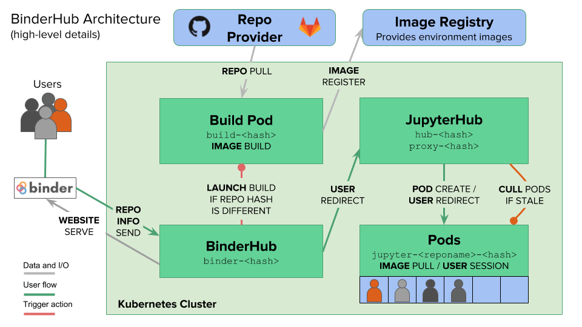

1. The BinderHub Architecture¶
This page provides a high-level overview of the technical pieces that make up a BinderHub deployment.
1.1. Tools used by BinderHub¶
BinderHub connects several services together to provide on-the-fly creation and registry of Docker images. It utilizes the following tools:
- A cloud provider such Google Cloud, Microsoft Azure, Amazon EC2, and others
- Kubernetes to manage resources on the cloud
- Helm to configure and control Kubernetes
- Docker to use containers that standardize computing environments
- A BinderHub UI that users can access to specify GitHub repos they want built
- BinderHub to generate Docker images using the URL of a GitHub repository
- A Docker registry (such as gcr.io) that hosts container images
- JupyterHub to deploy temporary containers for users
1.2. What happens when a user clicks a Binder link?¶
After a user clicks a Binder link, the following chain of events happens:
BinderHub resolves the link to the repository.
BinderHub determines whether a Docker image already exists for the repository at the latest
ref(git commit hash, branch, or tag).If the image doesn’t exist, BinderHub creates a
buildpod that uses repo2docker to do the following:- Fetch the repository associated with the link
- Build a Docker container image containing the environment specified in configuration files in the repository.
- Push that image to a Docker registry, and send the registry information to the BinderHub for future reference.
BinderHub sends the Docker image registry to JupyterHub.
JupyterHub creates a Kubernetes pod for the user that serves the built Docker image for the repository.
JupyterHub monitors the user’s pod for activity, and destroys it after a short period of inactivity.
1.3. A diagram of the BinderHub architecture¶
Here is a high-level overview of the components that make up BinderHub.
